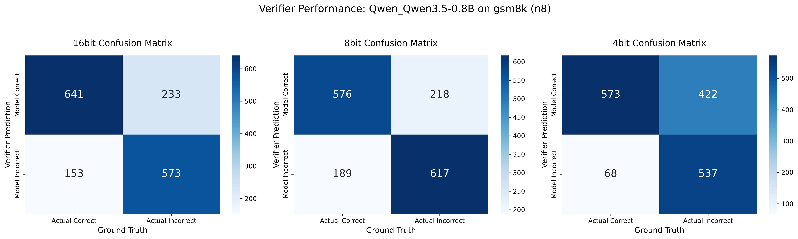
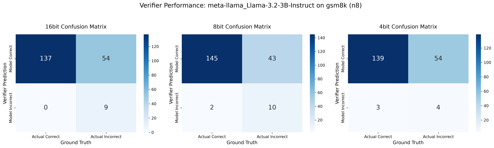

Evaluating if quantized models can act as reliable judges of their own logic.
Can a quantized model reliably judge if its own answers are correct? We fed generated mathematical traces back into the models as judges. The main findings:
The Delta ($\Delta$) metric shows whether verification improves final accuracy. MCC (Matthew's Correlation Coefficient) measures the true quality of the verifier, correctly handling class imbalances where FPR fails.
| Model | Precision | Gen Acc | Ver Acc | Delta ($\Delta$) | Trace Acc | MCC |
|---|---|---|---|---|---|---|
| Qwen Family (Reliable Judges) | ||||||
| Qwen3.5-2B | 16-bit | 82.00% | 83.50% | +1.50% | 80.19% | 0.5688 |
| Qwen3.5-2B | 8-bit | 80.00% | 80.00% | 0.00% | 78.62% | 0.5433 |
| Qwen3.5-2B | 4-bit | 79.07% | 79.07% | 0.00% | 79.12% | 0.5516 |
| Qwen3.5-0.8B | 16-bit | 61.50% | 63.00% | +1.50% | 75.88% | 0.5204 |
| Qwen3.5-0.8B | 8-bit | 62.50% | 66.00% | +3.50% | 74.56% | 0.4914 |
| Qwen3.5-0.8B | 4-bit | 55.00% | 58.50% | +3.50% | 69.38% | 0.4587 |
| DeepSeek (Quantization Collapse) | ||||||
| DeepSeek-R1-1.5B | 16-bit | 90.00% | 91.00% | +1.00% | 79.00% | 0.3628 |
| DeepSeek-R1-1.5B | 8-bit | 87.00% | 80.00% | -7.00% | 57.12% | 0.0865 |
| DeepSeek-R1-1.5B | 4-bit | 87.00% | 85.00% | -2.00% | 79.25% | 0.4381 |
| Broken Verifiers (Near-Zero or Negative MCC) | ||||||
| Llama-3.2-3B | 4-bit | 80.00% | 80.00% | 0.00% | 71.50% | 0.1181 |
| Gemma-3-1B-it | 16-bit | 55.00% | 52.00% | -3.00% | 46.25% | -0.0347 |
| Model (Dataset) | Precision | Gen Acc | Ver Acc | Delta ($\Delta$) | Trace Acc | MCC |
|---|---|---|---|---|---|---|
| Qwen 0.8B (SVAMP) | 16-bit | 84.00% | 82.00% | -2.00% | 72.50% | 0.3724 |
| Qwen 0.8B (SVAMP) | 8-bit | 80.00% | 78.00% | -2.00% | 71.38% | 0.3663 |
| Qwen 0.8B (SVAMP) | 4-bit | 80.00% | 77.00% | -3.00% | 71.25% | 0.3690 |
Observation: Across all precisions, the Verifier $\Delta$ is strictly negative. When generation accuracy is too high, there are very few negative examples for the verifier to practice on. A verifier only improves the system when the task sits in the "sweet spot" of difficulty (like GSM8K).
The Shrinking Denominator Illusion: DeepSeek 16-bit shows a massive 63.64% False Positive Rate. Is it a terrible judge? No.
Because its generator is 90% accurate, 90% of the traces it evaluates are correct. The pool of True Negatives is so small (only 72 traces out of 800) that making just a handful of mistakes artificially inflates the FPR percentage.
The Solution (MCC): Matthew's Correlation Coefficient (MCC) takes all four quadrants of the confusion matrix into account, making it immune to class imbalance. DeepSeek 16-bit's MCC is a respectable 0.36. However, looking at the MCC reveals a new finding: DeepSeek's verifier collapses completely at 8-bit, plunging to an MCC of 0.08 (essentially random guessing). MCC surfaces insights that FPR obscures.
Notice how False Positives (top right quadrant) spike heavily when moving to 4-bit, dropping the MCC.

Llama acts as a sycophant. It approves almost all traces, leading to a near-zero MCC.

The model fails to recalculate the arithmetic internally. It sees confident-sounding steps and rubber-stamps them, a common bias in RLHF-aligned models.
The verifier likely lost track of the complex, sequential tax logic in Job B, diverging from its own internal reasoning and wrongly punishing the student.